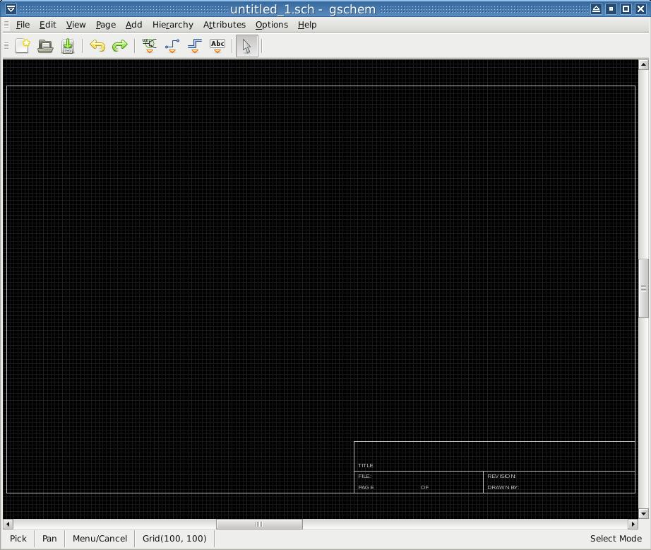
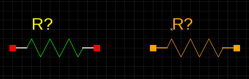
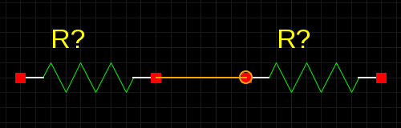
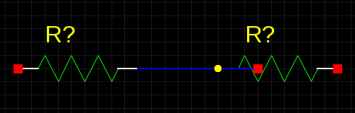

You need to become familiar with doing a few things in gschem, so just run gschem and start playing around:
You get an initial page with menus and a toolbar at the top. As you select operations from the menus, notice that there are usually keyboard shortcuts which can alternatively be used to access the menu functions.

Look at the page and you will see that it contains a title-block.
When drawing a schematic, it's a good idea to always start by
setting some schematic boundaries to draw within. This is why the
title-block is added every time you start gschem to create
a new schematic.
Try to zoom in and out the page:
Use keyboard shortcut Z to zoom in and Shift+Z to zoom out (or select from menu View→Zoom In or View→Zoom Out). Notice that as you press a key or a key sequence it is displayed in the status bar at the bottom. Notice also that as you zoom in or zoom out the viewable area centers around the mouse cursor.
Roll the mouse wheel first without and then with pressing one of the keys Shift or Control to see how to zoom or pan the page.
With the mouse in the gschem drawing area, hit the keys VE (or select from menu View→Zoom Extents) to zoom the view to the title-block symbol extents.
I find that using the default B sized title-block lets my
schematics print at a nice size on letter sized paper, but let's
suppose you don't like it, so you need to remove the old
title-block and replace it with another one:
Zoom the page to see the whole title-block.
Position the mouse pointer at the bottom left of the title-block, then press the left mouse button and drag the mouse to select it.
Hit the E Shift+L shortcut (or select Edit→Unlock from menu) to unlock and D or Delete to delete the title-block.
Bring up the
Select Component window by selecting from the menu
Add→Component or hit keyboard shortcut
I. Or you could click the add component icon on the toolbar (
).
In the Libraries list, select Titleblocks (generic).
Left click on the little triangle at the left or just double click the library name to open its component list.
Select title-A.sym.
Move the mouse onto the gschem drawing area and place the title-block symbol by clicking the left mouse button. Then click the right mouse button to abort adding more title-block symbols.
Let's add some components on the page and try to move them around:
Back in the select components window, (bring it up again if you closed it), select the Basic devices library and then select the component resistor-1.sym and place a couple of resistors on the schematic with the left mouse button.
Right click to abort adding more resistors.
Left click on one of the resistors to select it. Notice that it is now an orange color and that indicates it is selected.
Left click again anywhere to deselect it.
Alternate left clicking on both resistors to select them, but notice that if you don't hit the resistor just right, the title-block is selected instead. We really don't want to ever select the title-block again, so we can lock it to prevent its irritating selection: click so the title-block IS selected, then select Edit→Lock or hit keyboard shortcut EL. Now it's easier to select the resistors as we like.
Move the resistors around with the left mouse button.
Select a resistor and then rotate with the ER keys or the Edit→Rotate 90 Mode. Notice that it is rotated around the mouse pointer position. If you rotate from menu you have to define the rotation center position by clicking on it. If you don't see where the rotated component is, hit again VE to zoom to the schematic extents.
Hit U or Ctrl+Z to undo the last action and Ctrl+Y to redo it again.
Move the resistors relatively close together and then zoom in on them.

Now we can add some nets:

Look at the toolbar and see that your mode has switched to adding nets. Before you can change resistor selections again, you will have to re-enter select mode with the S key or by clicking the select toolbar icon () or by using the menu Edit→Select Mode. You will have to play with doing things to get used to the gschem modes.
If when you added the net between the resistors you get something that looks like this:

it means you missed the pin on the right resistor. The square cue on the end of the pin shows its connectible point and you must start and stop nets with the mouse on this red spot to make a connection to the pin. To correct this:
Now let's play with attributes:
Now go back to the tutorial and try working through the simple example there. If you encounter steps that aren't clear, look through the gschem user documentation and attributes documentation. Other gschem documentation can be found on the gEDA Documentation page.
tutorial by Bill Wilson (billw–at–gkrellm.net)
{kind=link}
{kind=link}
{kind=link}
{kind=link}
{kind=link}
{kind=link}
{kind=link}